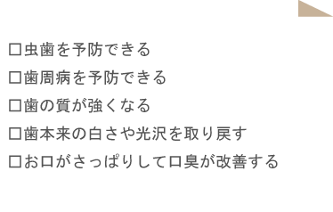

予防歯科とは
予防歯科とは、むし歯や歯周病にならないように行う「検査・予防処置・管理」のことです。以前までは、歯が痛くなってから歯医者へ受診するという方がほとんどでしたが、近年はむし歯や歯周病になる前に、歯医者を受診することが一般的になりつつあります。
定期検診ではむし歯や歯周病の有無をチェックするだけでなく、歯科衛生士によるブラッシング指導やホームケアでは取り切れないところのクリーニングを行い、健康的なお口を持続させるサポートを行っています。
予防歯科で期待できる効果

予防歯科は、このような効果が期待できます。
予防歯科は定期検診で受けられます
健康な歯を維持するにはメインテナンスが大事です。定期的に歯医者に通っていただき検診を受けるようにしましょう。
定期検診を受けるタイミングは、人によって違いますが、基本的には4～6ヶ月に一回くらいがおすすめです。 4～6ヶ月に一回検診を受けていれば、95％の方は高齢になっても自分の歯で食事ができるというデータもあります。 ただ、お口の状況は人それぞれ違います。そのため、お口の状態を総合的に判断して、定期検診のタイミングを決める必要があります。